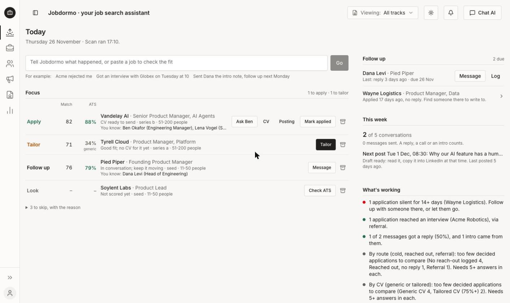
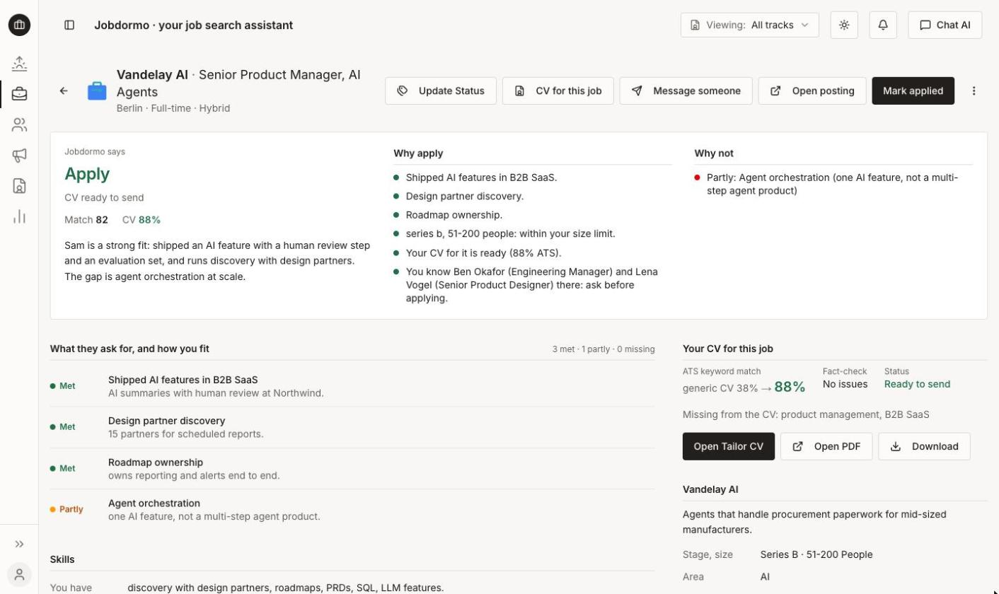
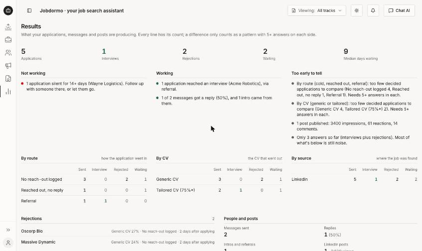
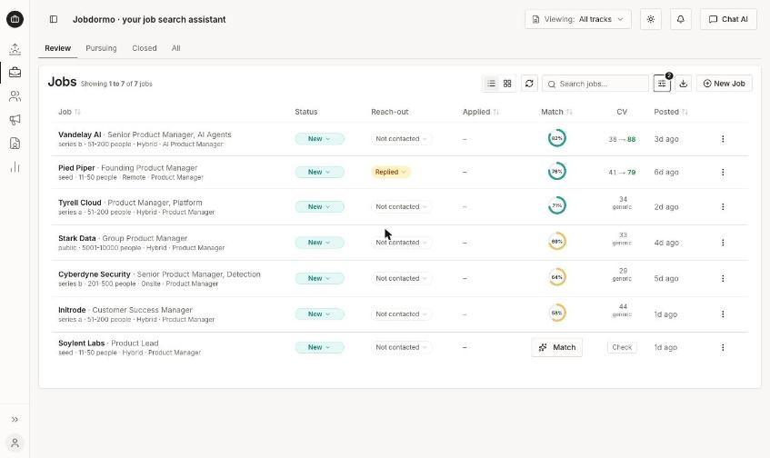
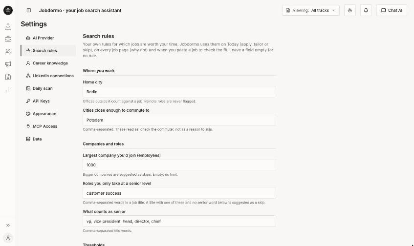

Jobdormo is a self-hosted job-search assistant. Every morning it tells you which jobs are worth your time, which CV is ready to send, who you know there and who to follow up with. When something happens, you tell it in one line.

Built around the questions you actually ask in the morning: what needs me, what's worth it, what do I say, and is any of this working.
Every open job gets one verb and a reason: Apply, Tailor, follow up, or Skip (too big, too far, too junior, too old). One-click actions on every row.
"Acme rejected me." "Sent Dana the intro note, follow up Monday." It proposes the changes; nothing is saved until you press Apply.
Apply, long shot or skip, each requirement marked met, partly or missing against your CV, who you know there, and your own rules applied.
It uses the posting's keywords wherever they're true for you, asks about the rest and remembers your answers, then fact-checks every line before you send it.
Import your LinkedIn connections and every job shows who you know at the company, with a message drafted in your voice.
The next post is always drafted for its slot, rotating your themes and learning from what got results. It never posts for you.
Which route got answers, generic versus tailored CVs, how fast rejections came. It won't call something a pattern until there are enough answers.
Company career pages and job boards (Greenhouse, Lever, Ashby, Workable, Comeet, VC portfolio boards), deduplicated and scored against the right CV.
Home city and commutable cities, the biggest company you'd join, roles you only take at a senior level, your ATS target. Everything reads them.
No tabs to dig through: the decision first, the evidence next to it.




You need Node 22.19 or newer, Docker for Postgres, Chrome or Chromium for PDFs, and an AI model: an Anthropic key for the best writing, or Ollama locally for free.
npm run dev.git clone https://github.com/alajter/jobdormo.git && cd jobdormo
npm install && cp .env.example .env
docker compose -f docker-compose.local.yml up -d
npx prisma migrate deploy
npm run devWant to look around first? The repo ships a demo: a fictional candidate with CVs, jobs, people and results, loaded into its own database with one script. See the README.
Everything runs on your machine: the database, your CVs and your notes. The only things that leave it are calls to the AI provider you choose (or none, with Ollama) and the job boards the scan reads. API keys are stored encrypted.